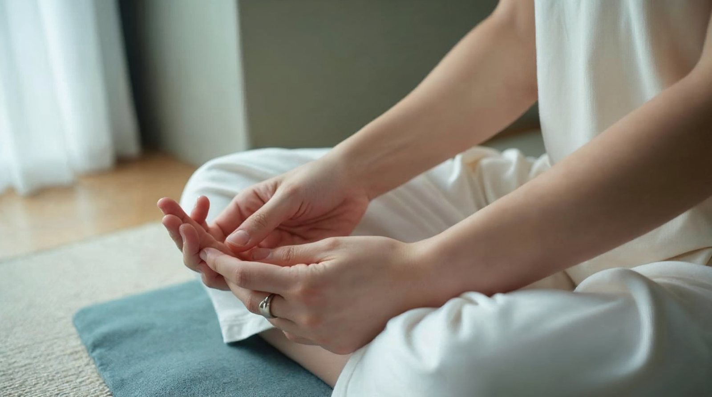

이종호 한의사 감수좋은꿈참사랑한의원 대표원장 (한의사 면허번호 19769)발행 2026-11-23 · 수정 2026-11-27
이 글의 차례
- 프로필에 기재된 내용
- 먼저 알아볼 것
- 신청 전에는 어떤 순서로 알아보면 좋을까요?
- 왜 생활 리듬을 함께 보나요
- 월경 주기를 기록하면 무엇이 도움이 될까요?
- 월경 기록은 이렇게 적어 보세요
- 임신 준비 중 생활에서 먼저 살펴볼 것은요?
- 한의원 상담과 난임 클리닉 치료는 어떻게 함께 하나요?
- 한약은 언제, 어떻게 정하나요?
- 몸이 차다는 느낌은 어떻게 살피나요?
- 부부가 함께 준비하면 좋은 이유는 무엇일까요?
- 마음이 지칠 때는 어떻게 하면 좋을까요?
- 상담은 이렇게 진행됩니다
- 이런 이야기를 들은 적이 있다면 함께 알려 주세요
- 먼저 이렇게 여쭙니다
- 상담 전에 부부가 함께 이야기해 두면 좋은 것
- 예를 들면 이런 경우입니다
- 스스로 점검해 보세요
- 병원 일정과 생활을 함께 맞추려면 어떻게 할까요?
- 다음 진료에서는 무엇을 이어서 보나요?
- 이렇게 기록해 오시면 상담이 쉬워집니다
- 꼭 알려 주세요
- 이런 증상은 먼저 확인이 필요합니다
임신을 준비하는 시간이 길어지면 달력을 넘길 때마다 마음이 조금씩 무거워지실 수 있어요. 병원 일정에 검사, 기록까지 챙기다 보면 몸보다 마음이 먼저 지치는 경우가 많거든요. 그게 자연스러운 거예요.
동작구 한의약 난임치료 지원사업은 올해 운영 여부와 신청 기간, 대상 요건을 동작구청과 보건소에 먼저 확인하시는 게 출발점이에요. 지역 지원 사업이 있다면 비용 부담을 덜 수 있는지 미리 알아 두시면 좋습니다.
그러니까 사실은 두 가지를 나눠서 보시면 마음이 한결 정리돼요. '지원을 받을 수 있느냐'는 구청이 정하는 일이고, '준비하는 동안 몸을 어떻게 돌보느냐'는 진료실에서 함께 할 일이에요. 두 개가 다른 얘기거든요.
프로필에 기재된 내용
이종호 대표원장은 한의원 프로필 카드에 동작구 한의약 난임치료 지원사업 지정 한의사로 소개되어 있습니다. 사업의 지정 연도와 현재 운영 여부는 확인이 필요합니다.
먼저 알아볼 것
- 올해 사업이 운영되는지, 신청 기간은 언제인지
- 부부의 거주지와 소득, 난임 진단 여부 등 대상 요건
- 지원 범위(한약, 침 등)와 본인 부담 여부
- 신청에 필요한 서류
- 이미 받은 난임 검사 결과를 신청 때 내야 하는지
- 지원 기간 동안 정해진 진료 횟수나 기간이 있는지
- 다른 난임 지원 사업과 함께 신청할 수 있는지
- 신청 뒤 결과를 언제, 어떻게 알려 주는지
대상과 지원 내용은 동작구청과 보건소의 안내가 기준입니다.
신청 전에는 어떤 순서로 알아보면 좋을까요?
- 동작구청 홈페이지 공지나 보건소 안내에서 올해 사업이 있는지 먼저 찾아보기
- 보건소에 전화해 신청 기간, 대상 요건, 필요한 서류를 한 번에 물어보기
- 들은 내용을 통화 날짜, 담당 부서와 함께 메모해 두기
- 난임 진단이나 검사 결과처럼 준비할 서류가 있다면 다니는 병원에 발급 방법을 미리 확인하기
- 신청 기간과 진료 일정을 달력에 함께 적어 두기
지원 사업은 신청 기간이 짧거나 정해진 인원이 차면 마감되는 경우도 있어, 관심이 있다면 공고가 나기 전부터 미리 알아 두시는 것이 좋습니다. 대상이 되는지는 구청과 보건소의 판단이 기준입니다. 문의할 때 부부의 주소지가 다르다면 그 점도 함께 말씀해 보세요.

왜 생활 리듬을 함께 보나요
임신 준비는 월경 주기와 몸의 컨디션, 잠과 스트레스, 식사와 체중 같은 생활 전체와 맞닿아 있습니다. 한의원에서는 임신 여부나 결과를 약속하지 않고, 준비하는 동안의 몸 상태와 생활 리듬을 함께 살핍니다. 산부인과나 난임 클리닉의 치료와 일정이 있다면 그것이 우선입니다.
월경 주기를 기록하면 무엇이 도움이 될까요?
월경 주기는 임신 준비 동안 몸의 흐름을 가장 쉽게 들여다볼 수 있는 기록입니다. 주기의 길이가 일정한지, 월경 양과 통증이 어떤지, 주기 중간쯤 몸의 느낌이 어떻게 달라지는지를 몇 달 모아 보면 지금 몸의 리듬이 보이기 시작합니다.
주기는 생각보다 많은 것에 흔들립니다. 체중이 짧은 기간에 크게 바뀌었을 때, 잠이 크게 부족한 시기, 긴장과 걱정이 큰 시기, 갑상선 기능에 변화가 있을 때 주기가 들쭉날쭉해지기도 합니다.
기록은 휴대전화 앱이든 달력이든 편한 방법이면 됩니다. 처음에는 빠지는 날이 있어도 괜찮으니, 석 달쯤 이어 가 보는 것을 목표로 삼아 보세요. 산부인과에서 받은 검사 결과와 함께 보면, 진료실에서 지금의 몸 상태를 이야기 나누기가 훨씬 쉬워집니다.
월경 기록은 이렇게 적어 보세요
- 월경이 시작된 날과 끝난 날
- 양은 많은 날 하루에 쓴 패드 개수처럼 셀 수 있는 기준으로 적기
- 월경통은 0부터 10까지 점수로, 진통제를 먹었다면 그 횟수도 함께
- 주기 중간쯤 냉의 변화나 아랫배가 묵직한 느낌이 있었는지
- 그달에 잠이 크게 부족했거나, 아팠거나, 긴장할 일이 많았는지
기초체온은 아침마다 재는 일이 부담스럽지 않을 때만 해 보셔도 충분합니다. 기록이 스트레스가 된다면 시작일과 통증만 적어도 괜찮습니다.
임신 준비 중 생활에서 먼저 살펴볼 것은요?
- 잠: 잠드는 시각을 일정하게 맞추고, 늦은 밤 휴대전화 화면을 줄여 보기
- 끼니: 끼니를 거르지 않고, 단백질과 채소를 고르게 챙기기
- 체중: 지나치게 마르거나 최근 체중이 크게 늘었다면 무리한 다이어트보다 천천히 조절하기
- 카페인과 술: 커피는 양을 정해 두고, 술은 부부 모두 줄여 보기
- 담배: 부부 가운데 흡연하는 분이 있다면 금연을 함께 고민해 보기
- 움직임: 무리한 운동보다 걷기처럼 꾸준히 할 수 있는 가벼운 운동부터 시작하기
- 영양제: 엽산 같은 영양제는 다니는 산부인과의 안내를 따르고, 드시는 것을 모두 알려 주기
모든 것을 완벽하게 지키려 하면 그 자체가 부담이 됩니다. 부부가 함께 할 수 있는 것 한두 가지부터 시작해 보시길 권합니다. 예를 들어 같은 시각에 잠자리에 들기, 주말 아침에 함께 걷기처럼 작고 구체적인 것이 오래 갑니다.
한의원 상담과 난임 클리닉 치료는 어떻게 함께 하나요?
난임 클리닉에서 검사나 시술을 받고 계시다면 그 치료 계획이 가장 먼저입니다. 한의원에서는 클리닉의 일정과 처방받은 약을 먼저 확인하고, 그 흐름을 흔들지 않는 범위에서 잠과 식사, 몸의 긴장 같은 생활 리듬을 함께 살핍니다.
시술 주기가 정해지면 날짜를 미리 알려 주세요. 한약을 드시고 있다면 시술 기간에 어떻게 할지 클리닉과 상의가 필요한 경우가 있어, 그 점을 함께 확인합니다. 클리닉에서 받은 약은 처방한 의사와 상의 없이 바꾸거나 멈추지 마세요.
한약은 언제, 어떻게 정하나요?
한약은 진맥과 진찰, 상담을 거친 뒤에 정합니다. 주된 고민과 함께 소화와 잠, 몸의 온기, 대소변, 복용 중인 약과 간·신장 상태를 확인하고 처방하며, 약재는 대표원장이 검수한 뒤 원내에서 달여 준비합니다.
드시는 동안 불편한 반응이 있으면 복용을 멈추고 연락해 주세요. 임신 가능성이 생겼거나 임신이 확인되면 바로 알려 주시고, 다니는 산부인과와도 꼭 상의해 주세요.
몸이 차다는 느낌은 어떻게 살피나요?
임신을 준비하는 분들 가운데 손발이나 아랫배가 차다고 걱정하시는 분이 많습니다. 저는 그 느낌이 하루 중 언제 심한지, 옷차림과 실내 온도는 어떤지, 하루에 얼마나 움직이고 무엇을 드시는지를 먼저 여쭙습니다.
찬 느낌은 오래 앉아 있는 생활, 끼니를 거르는 습관, 잠 부족이 겹쳐 생기는 경우가 많습니다. 다만 쉽게 지치고 몸이 늘 차다면 빈혈이나 갑상선 기능처럼 검사로 확인할 수 있는 이유가 없는지도 함께 살피고, 필요하면 검사를 권합니다.
부부가 함께 준비하면 좋은 이유는 무엇일까요?
임신 준비는 한 사람만의 일이 아닌데도, 검사와 진료, 기록이 한쪽에 몰리는 경우가 많습니다. 남편 쪽 검사도 함께 받아 보고, 결과가 걱정된다면 같이 이야기 나눠 보시길 권합니다(임신 준비 중 남편 쪽 정액 검사 결과가 걱정될 때(남성 난임)는 무엇을 살피고 준비하나요?).
잠과 술, 담배, 식사 같은 생활 습관도 부부가 함께 바꿀 때 훨씬 오래 이어 갈 수 있습니다. 병원 일정이나 기록을 나눠 맡는 것만으로도 한 사람에게 쏠리는 부담이 줄어듭니다.
마음이 지칠 때는 어떻게 하면 좋을까요?
임신 준비가 길어지면 달마다 기대와 실망이 되풀이되면서 마음이 많이 지치기 쉽습니다. 주변에서 무심코 건네는 질문에 상처받는 일도 생깁니다.
기록과 생활 관리가 오히려 부담으로 느껴진다면 잠시 줄여도 괜찮습니다. 부부가 임신 이야기를 하지 않고 함께 쉬는 시간을 일부러 만들어 보시는 것도 도움이 됩니다. 함께 산책하거나 좋아하는 음식을 먹는 평범한 저녁이 생각보다 큰 쉼이 되기도 합니다.
잠이 크게 흔들리거나 아무 의욕이 들지 않는 날이 길어진다면 그 마음도 진료 때 그대로 말씀해 주세요. 몸의 상태와 함께 잠과 긴장을 살피고, 한의원에서 도울 수 있는 방법을 함께 찾아봅니다.
상담은 이렇게 진행됩니다
모든 분의 맥을 먼저 짚고 부부의 이야기를 함께 들은 뒤, 필요하다고 판단될 때 설진·복진을 더해 몸 상태를 살피고 침이나 한약 상담 등 상태에 맞는 방법을 정합니다. 한약은 진단과 상담을 거친 뒤에 처방하며, 받고 있는 다른 치료 일정과 겹치지 않도록 함께 확인합니다.
이런 이야기를 들은 적이 있다면 함께 알려 주세요
- 난소 기능 수치(AMH)가 낮다는 이야기를 들었다면: 수치 하나만으로 결과를 단정하기보다, 클리닉의 계획과 지금의 생활 리듬을 함께 놓고 이야기합니다(난소 기능 저하(AMH 수치가 낮다)는 말을 들었을 때 임신 준비와 생활은 어떻게 살피나요?).
- 유산을 겪은 적이 있다면: 몸의 회복과 함께 마음의 회복도 시간이 필요합니다. 언제 다시 준비를 시작할지는 산부인과와 상의하시고, 그동안의 몸과 마음을 함께 살핍니다(유산을 겪은 뒤 몸과 마음의 회복, 다음 임신 준비는 어떻게 살피나요?).
- 다낭성 난소나 갑상선 이야기를 들었다면: 받은 검사 결과와 드시는 약을 가져와 주세요. 치료 중인 질환의 진료가 먼저입니다.
먼저 이렇게 여쭙니다
- 임신을 준비한 지 얼마나 되셨고, 지금 받고 있는 치료가 있나요?
- 월경 주기는 일정한 편이고, 월경통이나 양은 어떤가요?
- 잠은 몇 시에 들고, 아침에 개운하신가요?
- 식사는 규칙적이고, 최근 체중이 달라졌나요?
- 손발이나 아랫배가 차다고 느끼시나요?
- 요즘 마음이 많이 지치지는 않으셨나요?
- 드시는 약과 영양제가 있나요?
상담 전에 부부가 함께 이야기해 두면 좋은 것
- 지금까지 받은 검사와 치료, 그 과정에서 힘들었던 점
- 앞으로의 클리닉 일정과 계획
- 생활에서 함께 바꿔 볼 수 있는 것과 어려운 것
- 상담에서 가장 궁금한 질문 두세 가지
미리 이야기를 나눠 두면 진료실에서 한 사람만 설명하느라 지치지 않고, 두 분의 생각을 함께 들을 수 있습니다. 서로 생각이 달라도 괜찮습니다. 같은 일을 겪으면서도 마음의 속도는 다를 수 있습니다. 그 차이도 상담에서 함께 이야기 나눌 수 있습니다.
예를 들면 이런 경우입니다
- 예를 들어 야근과 출장이 잦아 부부가 함께 보내는 시간이 적다는 맞벌이 부부라면, 각자의 잠과 식사 리듬, 진료 일정을 맞출 수 있는 시간을 함께 여쭙습니다.
- 예를 들어 다이어트를 한 뒤로 월경 주기가 들쭉날쭉해졌다는 분이라면, 체중이 바뀐 시기와 식사량, 운동량을 함께 보고 산부인과 검사 결과도 확인합니다.
- 예를 들어 월경통이 심해 진통제를 자주 먹는데 임신 준비 중이라 걱정된다는 분이라면, 통증의 정도와 진통제 횟수를 함께 적어 오시도록 하고 산부인과 진료 여부도 확인합니다.
- 예를 들어 난임 클리닉 시술 일정을 앞두고 있다는 분이라면, 클리닉의 일정과 약을 먼저 확인하고 그 일정과 겹치지 않는 범위에서 생활 리듬을 함께 살핍니다.
스스로 점검해 보세요
- 월경 주기가 달마다 일주일 넘게 달라진다
- 월경통 때문에 일상생활이 어려운 날이 있다
- 잠드는 시각이 들쭉날쭉하고 아침에 개운하지 않다
- 끼니를 자주 거르거나 최근 체중이 크게 바뀌었다
- 커피나 술을 줄이기 어렵다
- 손발이나 아랫배가 늘 차다고 느낀다
- 클리닉 일정과 회사 일정을 맞추느라 늘 쫓기는 기분이다
- 임신 준비 이야기만 나오면 마음이 무거워진다
여러 항목에 해당하면 상담 때 그대로 말씀해 주세요. 어떤 생활부터 함께 살필지 정하는 데 도움이 됩니다.
병원 일정과 생활을 함께 맞추려면 어떻게 할까요?
임신 준비 기간에는 산부인과나 클리닉의 진료, 검사, 시술 일정이 이어지기 쉽습니다. 한의원 진료까지 더해지면 일정이 버거워질 수 있어, 처음 상담 때 지금 다니는 병원의 일정을 함께 말씀해 주세요.
일정이 빠듯하다면 진료 간격을 조정하고, 오시지 못하는 동안 집에서 해 볼 것을 함께 정합니다. 여러 진료를 무리하게 이어 가다 지치는 것보다, 생활에 맞는 속도로 꾸준히 이어 가는 편이 몸과 마음 모두에 부담이 적습니다.
다음 진료에서는 무엇을 이어서 보나요?
다시 오시면 맥부터 다시 짚고, 그사이의 월경 기록과 잠, 식사가 어땠는지 이어서 여쭙습니다. 함께 정한 생활 습관을 해 보셨는지, 해 보니 어땠는지도 듣고 다음에 무엇을 바꿔 볼지 함께 정합니다.
클리닉에서 새로 받은 검사 결과나 바뀐 일정이 있다면 그 이야기부터 먼저 나눕니다. 기록이 쌓일수록 몸의 흐름을 더 잘 이해할 수 있습니다. 진료 때마다 궁금했던 점을 메모해 오시면 짧은 시간에도 꼭 필요한 이야기를 먼저 나눌 수 있습니다.
이렇게 기록해 오시면 상담이 쉬워집니다
- 최근 몇 달의 월경 시작일과 주기, 양, 통증
- 수면과 피로, 스트레스가 큰 시기
- 식사 습관과 체중 변화, 복용 중인 약과 영양제
- 지금까지 받은 검사와 치료 이력(여성 건강 글 모아 보기)
- 부부 각자의 잠과 음주, 흡연 습관
꼭 알려 주세요
임신 준비 중에는 몸에 작은 변화가 있어도 "이 정도는 말 안 해도 되겠지" 하고 넘기시는 분이 많아요. 그런데 아래 내용은 제가 치료 방법을 고를 때 가장 먼저 알아야 하는 것들이에요.
- 임신 가능성이 있거나 임신 중인 경우
- 산부인과나 난임 클리닉에서 치료를 받고 있는 경우(치료 일정과 약은 임의로 바꾸지 마세요)
- 갑상선 질환처럼 치료 중인 다른 질환이 있는 경우
임신 가능성이 생겼거나 임신이 확인되면 바로 알려 주시고, 다니는 산부인과와도 꼭 상의해 주세요. 그에 맞춰 침과 한약을 어떻게 할지 다시 정합니다.
몸을 살피고 방법을 고르는 건 제가 할게요. 대신 하나만 부탁드려요. 월경이 시작된 날 하나만이라도 달력에 꾸준히 적어 주세요. 그 날짜들이 쌓이면 몸의 흐름이 보이기 시작하거든요. 딴 기록은 부담되시면 잠시 쉬셔도 돼요.
준비하는 시간이 길어질수록 스스로를 탓하게 되는 날도 생기실 수 있어요. 누구의 잘못도 아니에요. 혼자 버티시기보다 한 번 같이 이야기 나누시죠. 궁금한 건 그냥 편하게 물어보세요. 두 분의 몸과 생활을 차근차근 함께 살펴보겠습니다.
이런 증상은 먼저 확인이 필요합니다
- 심한 복통과 질 출혈이 있는 경우
- 임신 가능성이 있는 상태에서 한쪽 아랫배가 심하게 아픈 경우(자궁외임신 가능성, 지체 없이 가까운 응급실)
이런 신호가 있으면 한의원보다 가까운 병원이나 응급실을 먼저 찾으세요.

여쭙는 것
- 임신을 준비한 지 얼마나 되셨고, 지금 받고 있는 치료가 있나요?
- 월경 주기는 일정한 편이고, 월경통이나 양은 어떤가요?
- 잠은 몇 시에 들고, 아침에 개운하신가요?
먼저 확인이 필요한 신호
- 심한 복통과 질 출혈이 있는 경우
- 임신 가능성이 있는 상태에서 한쪽 아랫배가 심하게 아픈 경우(자궁외임신 가능성, 지…
자주 묻는 질문
한의원 상담에서는 무엇을 살피나요?
월경 주기, 수면, 식사 습관, 복용 중인 약 같은 몸 상태와 생활을 함께 이야기합니다. 임신 여부나 결과를 약속드리지 않습니다.
남편도 함께 진료받을 수 있나요?
네, 부부가 함께 상담받을 수 있습니다.
난임 클리닉 치료와 같이 받아도 되나요?
받고 있는 치료와 약, 일정을 알려 주시면 겹치지 않도록 함께 확인합니다. 클리닉의 치료 계획이 우선입니다.
지원사업 대상이 아니어도 상담받을 수 있나요?
네. 지원 여부와 관계없이 임신을 준비하는 동안의 몸 상태와 생활 리듬을 함께 살핍니다. 비용은 진찰 후 안내합니다.
좋은꿈참사랑한의원은 재진 때 지난번 이야기부터 이어서 여쭙니다. 진료시간과 예약은 오시는 길에서 확인하세요.
어디서 상담받을 수 있나요?
좋은꿈참사랑한의원은 서울 동작구 만양로2길 2 신성빌딩 3층·5층(서울 동작구 상도동, 7호선 상도역 3번 출구 근처)에 있습니다. 한의사 3명(이종호 대표원장, 조영기 수석진료원장, 정원영 진료원장)이 진료합니다. 진료시간은 평일 09:30~20:00(점심 13:00~14:00), 토·일·공휴일 09:30~15:00이며, 방문 전 전화로 확인을 권합니다. 예약은 네이버 예약, 카카오톡 상담, 전화 02-815-7510로 받습니다.
이 글은 일반적인 건강 정보이며 개인의 진단이나 치료를 대신하지 않습니다. 증상이 있거나 복용 중인 약이 있다면 진료를 통해 확인하세요. 치료 효과는 개인마다 다를 수 있습니다.
작성 기준: 일반적으로 알려져 있는 건강 정보를 참고해 정리했습니다(대표원장 감수). 증상 기록은 1~2주 동안 하루 1회, 비슷한 시간에 적어 오시면 지난 상태와 비교하기 쉽습니다.